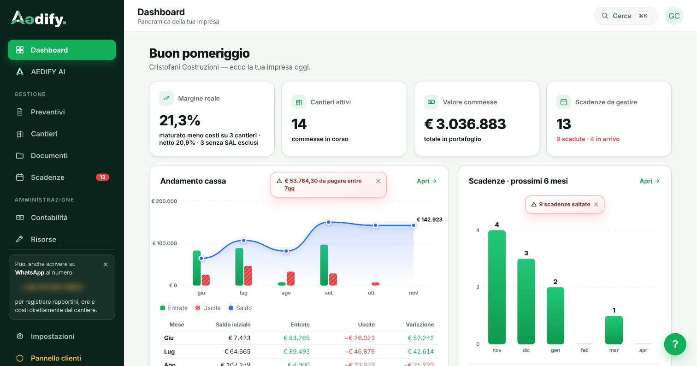

I conti del cantiere li scopri solo a fine lavoro?
Con Aedify li sai mentre lavori, in tempo reale. Aedify è il gestionale completo per imprese edili che usa l'AI per registrare, organizzare e rispondere, così tu non devi compilare niente a mano.
- Startup italiana
- 30 giorni gratis senza carta
- Operai illimitati
- AI inclusa

La dashboard vera di Aedify, con i dati di un'impresa che lo usa: nessun numero inventato per l'occasione.
Imprese edili che hanno scelto Aedify
- Rossi Costruzioni
- Edil Bianchi
- Greco Ristrutturazioni
- Ferrari Imprese
- De Marco Srl
- Costruzioni Sud
Il dato nasce dal cantiere, non dall'ufficio. Il capocantiere manda un vocale su WhatsApp e Aedify registra tutto da solo: margini, scadenze, preventivi e contabilità, in tempo reale.
Aedify · gestionale per imprese edili
Come gestisci l'impresa adesso. Come la gestiresti con Aedify.
Stesso lavoro. Zero ore perse a raccogliere dati.
AdessoIl capocantiere scrive le ore su carta. Qualcuno le trascrive in ufficio la sera.
Con AedifyIl capocantiere manda un vocale su WhatsApp. Aedify registra le ore da solo, subito.
AdessoIl margine del cantiere lo scopri solo a fine lavoro, quando è troppo tardi.
Con AedifyIl margine si aggiorna ad ogni costo registrato. Intervieni finché sei ancora in tempo.
AdessoUn preventivo lo scrivi da zero, voce per voce: ore perse su ogni gara.
Con AedifyDescrivi il lavoro in italiano e Aedify genera il preventivo, pronto da inviare.
AdessoPer sapere a che punto sono i cantieri apri Excel, WhatsApp e le fatture, e incroci tutto a mano.
Con AedifyApri Aedify e in pochi secondi hai la situazione di ogni cantiere, aggiornata in tempo reale.
AdessoLe scadenze DURC e revisioni le tieni a mente, e te ne ricordi quando è quasi tardi.
Con AedifyAedify ti avvisa settimane prima di ogni scadenza. Rinnovi con un clic, senza pensarci.
AdessoPer una domanda sui conti chiami il commercialista e aspetti che risponda.
Con AedifyAEDIFY AI risponde h24 in italiano, sui tuoi dati reali. Nessuna attesa.
AdessoDDT, bolle e foto del cantiere finiscono sparsi tra email, WhatsApp e cartelle.
Con AedifyOgni documento si archivia da solo, collegato al cantiere giusto.
AdessoLe fatture dei fornitori le vai a prendere una a una da PEC e portali e le carichi nel gestionale.
Con AedifyDeleghi il codice destinatario ad Aedify e le fatture di acquisto arrivano in automatico, appena emesse.
Ore perse ogni settimana a raccogliere e ricopiare dati
in media per impresa
ore e fatture entrano da soli
risponde sempre
Tre persone, un solo gestionale. Ognuno fa quello che fa già.
Il titolare vede i conti, il capocantiere manda un vocale, l'ufficio smette di ricopiare. I dati si aggiornano tra loro, da soli.
Sai quanto guadagni mentre lavori
Il margine di ogni cantiere si aggiorna ad ogni registrazione. Non aspetti fine lavoro.
 Il capocantiere
Il capocantiereZero app. Zero formazione. Solo WhatsApp.
Il capocantiere manda un vocale come fa già ogni giorno. Aedify capisce, registra e aggiorna tutto da solo.
L'ufficioLe fatture dei fornitori arrivano da sole
Deleghi il codice destinatario ad Aedify e le fatture di acquisto arrivano e si archiviano da sole.
Le fatture entrano da sole. Tu controlli e basta.
Aedify riceve le fatture di acquisto e le mette in fila per la tua conferma.
Deleghi il codice destinatario una volta sola.
Da quel momento le fatture di acquisto arrivano in automatico, appena emesse. Niente PEC, niente portali, niente download.
- Fatture di acquisto ricevute in automatico dal Sistema di Interscambio
- Archiviazione automatica, pronta per la contabilità
- Nessuna PEC da controllare, nessun download manuale
Dal cantiere ai conti. Un messaggio su WhatsApp.
Il capocantiere fa quello che fa già. Aedify fa il resto, automaticamente.
- 1
Il capocantiere manda un vocale su WhatsApp
Come fa già ogni giorno: nessuna app nuova, nessun login.
- 2
Aedify capisce e registra tutto
Ore, costi, materiali, cantiere. Tutto al posto giusto in automatico.
- 3
Tu apri l'app e trovi i conti già fatti
Margini, ore, fatture, cassa. Aggiornati. Senza che nessuno abbia compilato niente.
Un assistente che conosce ogni numero della tua impresa. Sempre disponibile.
Non devi aspettare il commercialista o chiamare qualcuno in ufficio. Chiedi ad AEDIFY AI in italiano: ti risponde in secondi sui dati reali della tua impresa, h24.
Per scoprire Aedify in tutte le sue funzionalità consigliamo sempre una call di 15 minuti.
Ti mostriamo il gestionale dal vivo, sui tuoi cantieri reali. Gratis, senza impegno.
- Nessuna carta di credito
- Solo 15 minuti
- Sul tuo caso concreto